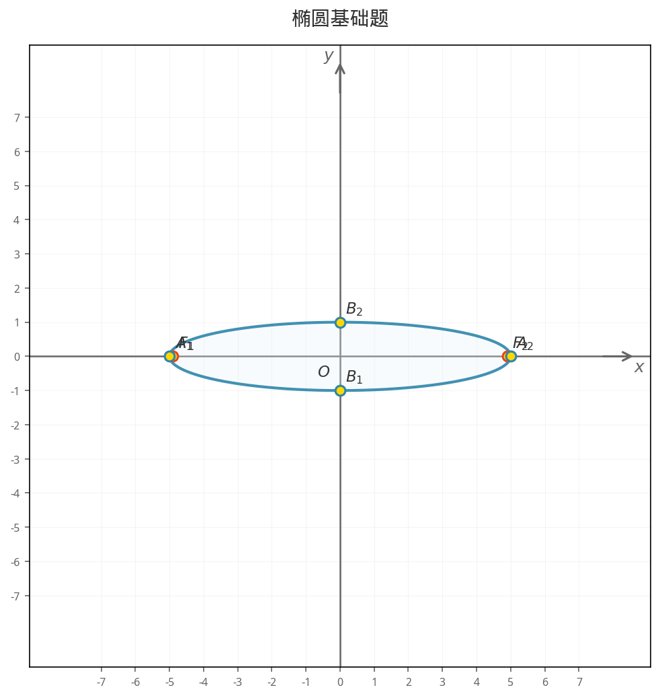
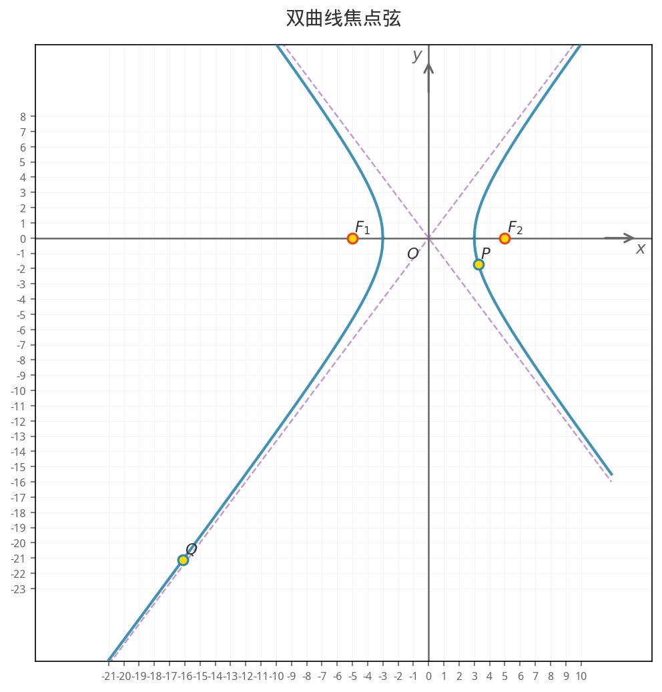
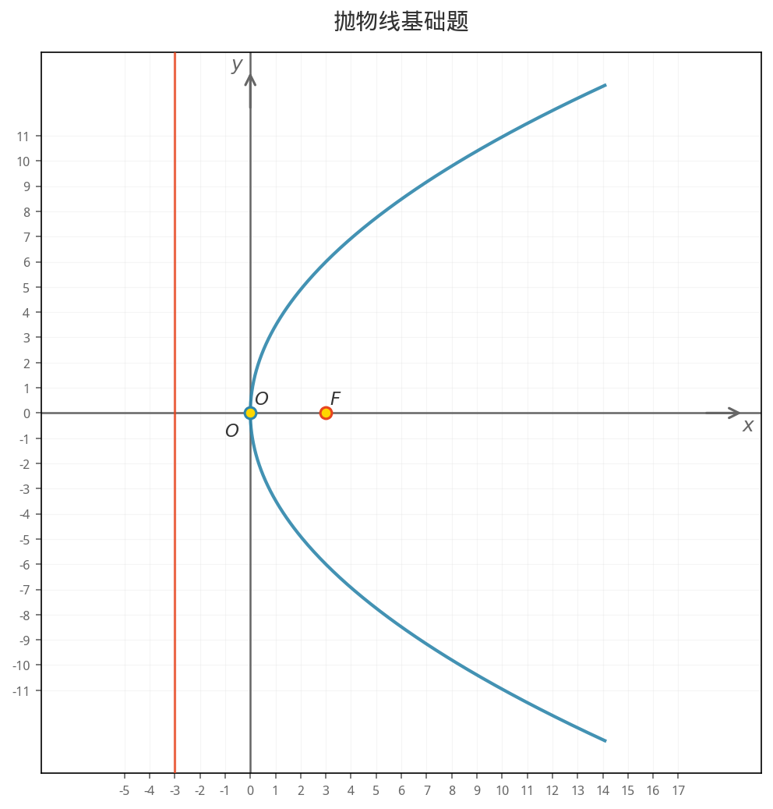
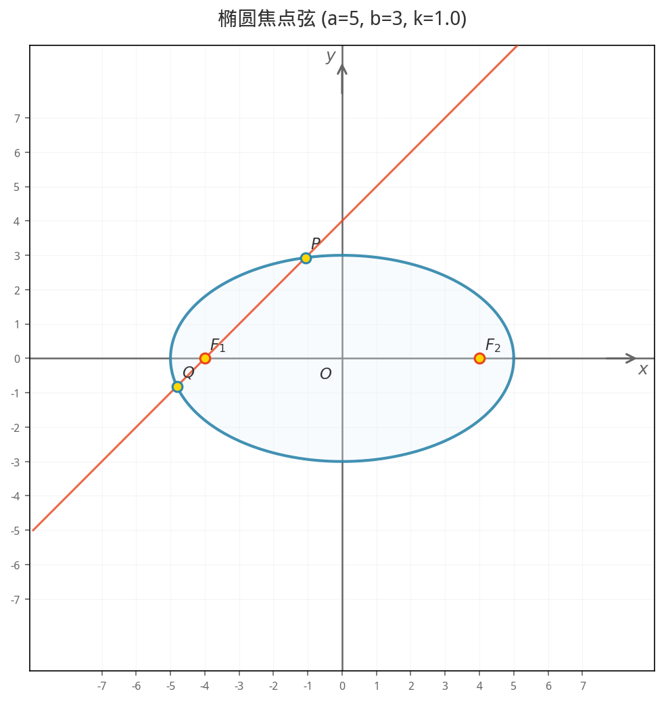
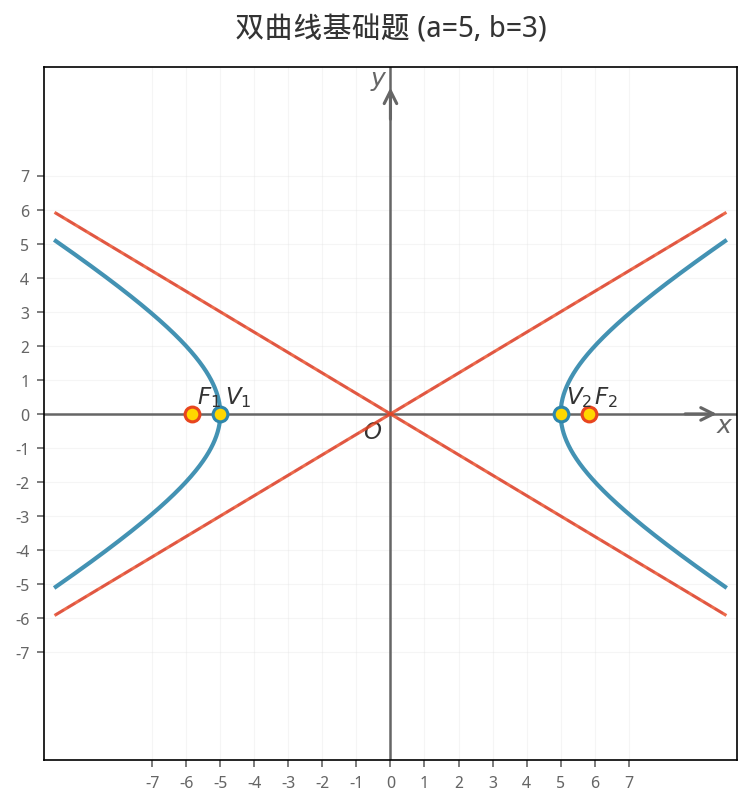
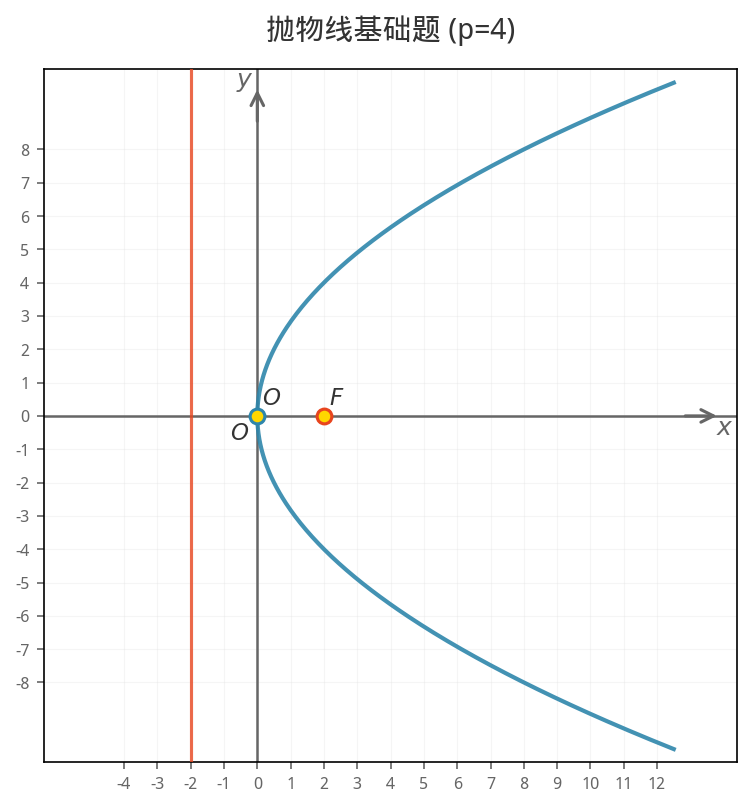

西安交通大学 · 2026 年 6 月
| 基础 | 标准方程 |
| 进阶 | 焦点弦、中点弦、切线、焦半径 |
| 竞赛 | 定点证明、面积最值、蒙日圆 |
| 基础 | 标准方程 |
| 进阶 | 焦点弦、渐近线、切线 |
| 竞赛 | 蝴蝶定理、蒙日圆 |
| 基础 | 标准方程 |
| 进阶 | 焦点弦、中点弦、焦半径 |
| 竞赛 | 阿基米德三角形、定点证明 |
| 基础 | 坐标互化 |
| 进阶 | 直线与圆、焦半径 |
| 竞赛 | 圆锥曲线统一方程 |
数学推导 → 参数计算 → 可解性验证 → LaTeX 模板
A = b**2 + a**2 * k**2
B = 2 * a**2 * c * k**2
C = a**2*c**2*k**2 - a**2*b**2
disc = B**2 - 4*A*C
assert disc >= 0
x1 = (-B + np.sqrt(disc))/(2*A)
x2 = (-B - np.sqrt(disc))/(2*A)
y1, y2 = k*(x1+c), k*(x2+c)@dataclass
class ConicParams:
"""圆锥曲线参数"""
center: Tuple[float, float] = (0, 0)
a: float = 1.0 # 半长轴/半实轴
b: float = 1.0 # 半短轴/半虚轴
c: float = 0.0 # 半焦距
e: float = 0.0 # 离心率
rotation: float = 0.0
def __post_init__(self):
# 自动计算 c 和 e
if self.c == 0:
self.c = np.sqrt(abs(self.a**2 - self.b**2))
if self.e == 0 and self.c > 0:
self.e = self.c / self.a@dataclass
class Problem:
"""解析几何题目"""
title: str # 题目标题
topic: str # 知识点
difficulty: int # 难度等级 (1-5)
problem_latex: str # 题干 LaTeX
solution_latex: str # 解答 LaTeX
conic_params: ConicParams
points: List[Point] # 关键点
lines: List[Line] # 关键直线
conic_type: str # 曲线类型
answer: str # 最终答案@dataclass
class Point:
x: float
y: float
label: str = "" # "F_1", "P", etc.
def distance_to(self, other):
return np.sqrt((self.x-other.x)**2 +
(self.y-other.y)**2)
@dataclass
class Line:
a: float # ax + by + c = 0
b: float
c: float
def distance_to_point(self, p):
return abs(self.a*p.x + self.b*p.y +
self.c) / np.sqrt(self.a**2+self.b**2)def generate_ellipse_dynamic(a=None, b=None,
problem_type="basic",
slope=None):
# 1. 参数处理
if a is None:
a = np.random.choice([2,3,4,5,6])
if b is None:
b = np.random.choice(range(1, a))
# 2. 参数验证
validate_ellipse(a, b) # a > b > 0
# 3. 计算导出参数
c = np.sqrt(a**2 - b**2)
e = c / a
params = ConicParams(a=a, b=b, c=c, e=e)
# 4. 分发到具体题型函数
if problem_type == "basic":
return _ellipse_basic(a, b, c, e, params)
elif problem_type == "chord":
return _ellipse_chord(a, b, c, e, params, slope)
elif problem_type == "focus_triangle":
return _ellipse_focus_triangle(a, b, c, e, params)
# ... 共 17 种椭圆题型# 椭圆 17 种题型
"basic" → _ellipse_basic
"chord" → _ellipse_chord
"focus_triangle" → _ellipse_focus_triangle
"midpoint_chord" → _ellipse_midpoint_chord
"focal_radius" → _ellipse_focal_radius
"slope_product" → _ellipse_slope_product
"tangent_line" → _ellipse_tangent_line
"second_def" → _ellipse_second_def
"fixed_point" → _ellipse_fixed_point
"area_opt" → _ellipse_area_opt
"ecc_range" → _ellipse_ecc_range
"tangent" → _ellipse_tangent
"third_def" → _ellipse_third_def
"optical_property"→ _ellipse_optical_property
"locus" → _ellipse_locus
"monge_circle" → _ellipse_monge_circle
"apollonius" → _ellipse_apolloniusdef _ellipse_chord(a, b, c, e, params, k):
F1 = Point(-c, 0, "F_1")
F2 = Point(c, 0, "F_2")
# 联立方程系数
A_coeff = b**2 + a**2 * k**2
B_coeff = 2 * a**2 * c * k**2
C_coeff = a**2*c**2*k**2 - a**2*b**2
# 判别式验证
disc = B_coeff**2 - 4*A_coeff*C_coeff
assert disc >= 0, "无实交点"
# 韦达定理求交点
x1 = (-B_coeff + np.sqrt(disc))/(2*A_coeff)
x2 = (-B_coeff - np.sqrt(disc))/(2*A_coeff)
y1, y2 = k*(x1+c), k*(x2+c)
# 计算弦长和面积
P, Q = Point(x1,y1,"P"), Point(x2,y2,"Q")
chord = P.distance_to(Q)
area = 0.5*abs(x1*y2 - x2*y1)
return Problem(
title=f"椭圆焦点弦 (a={a},b={b},k={k})",
topic="椭圆", difficulty=2,
problem_latex=..., solution_latex=...,
points=[F1, F2, P, Q],
answer=f"|PQ| = {chord:.4g}"
)# 题干 LaTeX
problem_latex = (
f"已知椭圆 $\\frac{{x^2}}{{{a**2}}}"
f"+ \\frac{{y^2}}{{{b**2}}} = 1$，"
f"过 $F_1$ 斜率为 ${k}$ 的直线 "
f"与椭圆交于 $P$、$Q$。"
f"\n\n(1) 求弦 $|PQ|$ 的长；"
f"\n\n(2) 求 $\\triangle OPQ$ 的面积。"
)
# 解答 LaTeX（含完整推导）
solution_latex = (
f"**解：**\n\n"
f"椭圆 $a={a}$，$b={b}$，"
f"$c=\\sqrt{{{a**2}-{b**2}}}={c:.4g}$。\n\n"
f"联立方程得：${A_coeff}x^2 + "
f"{B_coeff:.4g}x + {C_coeff:.4g} = 0$\n\n"
f"$|PQ| = \\sqrt{{1+{k**2}}} \\cdot "
f"|x_1-x_2| = {chord:.4g}$"
)def latex_to_unicode(text):
# 移除定界符
text = text.replace("$$", "")
text = text.replace("$", "")
# 转换分数
text = re.sub(
r'\\frac\{([^}]+)\}\{([^}]+)\}',
r'\1/\2', text
)
# 转换上标
text = re.sub(
r'\^\{([^}]+)\}',
lambda m: _to_superscript(m.group(1)),
text
)
# 替换希腊字母
for latex, uni in GREEK_MAP.items():
text = text.replace(latex, uni)
return text.strip()def render(self, problem, output_path):
# 1. 确定坐标范围
x_range, y_range = self._get_plot_range(problem)
# 2. 创建图形
fig, ax = self._setup_figure(x_range, y_range)
# 3. 绘制曲线
if problem.conic_type == "ellipse":
self._plot_ellipse(ax, problem.conic_params)
elif problem.conic_type == "hyperbola":
self._plot_hyperbola(ax, problem.conic_params)
elif problem.conic_type == "parabola":
self._plot_parabola(ax, problem.conic_params)
# 4. 绘制辅助线
for line in problem.lines:
self._plot_line(ax, line, x_range)
# 5. 标注关键点
for point in problem.points:
self._plot_point(ax, point)
# 6. 导出 PNG
fig.savefig(output_path, dpi=150,
bbox_inches='tight', facecolor='white')# 椭圆参数方程
def _plot_ellipse(self, ax, params):
theta = np.linspace(0, 2*np.pi, 1000)
x = params.center[0] + params.a * np.cos(theta)
y = params.center[1] + params.b * np.sin(theta)
ax.plot(x, y, color='#2E86AB', linewidth=2)
# 双曲线参数方程
def _plot_hyperbola(self, ax, params):
# 右支
x_right = np.linspace(params.a, x_max, 500)
y_pos = params.b * np.sqrt((x_right/params.a)**2 - 1)
y_neg = -y_pos
ax.plot(x_right, y_pos, color='#2E86AB')
ax.plot(x_right, y_neg, color='#2E86AB')
# 左支类似...def _get_plot_range(self, problem):
margin = 2
# 根据曲线类型计算基础范围
if problem.conic_type == "ellipse":
x_range = (-params.a-margin, params.a+margin)
y_range = (-params.b-margin, params.b+margin)
# 遍历所有关键点，扩展范围
for point in problem.points:
x_range = (min(x_range[0], point.x-margin),
max(x_range[1], point.x+margin))
# 确保正方形比例
max_span = max(x_span, y_span)
return x_range, y_range右侧展示了三种题型的实际配图效果，关键点标注清晰，曲线与数学参数严格一致。

椭圆

双曲线

抛物线
所有关键点坐标、曲线形状均由数学参数方程严格计算
椭圆 x²/25 + y²/9 = 1
c = √(25 - 9) = 4, e = 4/5
焦点 F₁(-4, 0), F₂(4, 0)
|PQ| = √(1+k²)·|x₁-x₂| = 6.72
S_△OPQ = ½|x₁y₂-x₂y₁| = 4.8def parse_user_input(text):
result = {
"topic": None,
"problem_type": "basic",
"params": {},
"slope": None
}
# 1. 识别知识点
topic_map = {
"椭圆": "ellipse",
"双曲线": "hyperbola",
"抛物线": "parabola",
"极坐标": "polar"
}
for keyword, topic in topic_map.items():
if keyword in text:
result["topic"] = topic
break
# 2. 识别题型 + 3. 提取参数
# ... (正则匹配)# 竞赛/压轴难度
if "竞赛" in text or "压轴" in text:
hard_types = {
"ellipse": ["fixed_point", "area_opt",
"ecc_range", "monge_circle"],
"hyperbola": ["asymptote_angle", "area_opt",
"monge_circle", "butterfly"],
"parabola": ["archimedes", "fixed_point",
"optical_property", "monge_circle"]
}
result["problem_type"] = random.choice(
hard_types[topic]
)| 用户输入 | 映射 | 题型示例 |
|---|---|---|
基础 | basic | 标准方程、焦点、顶点 |
进阶 | chord | 焦点弦、中点弦、切线 |
竞赛/压轴/难 | auto | 定点证明、阿基米德三角形 |
椭圆 a=5 b=3 → 基础题 (指定参数)
抛物线 p=4 弦长 k=1 → 焦点弦题
椭圆 竞赛 → 自动选高难度
random → 随机知识点+题型AI 生成的内容不直接使用，每种题型都经过验证闭环
| 优势 | 局限 |
|---|---|
| 数学推导速度快 | 个别题型有正负号错误 |
| 模式化代码生成 | 边界条件需人工检查 |
| LaTeX 模板自动生成 | 创造性构造题无法处理 |
输入："生成椭圆焦点弦题，过左焦点斜率为 k 的直线与椭圆交于 P,Q"
AI 推导:
两者缺一不可：没有 AI，60 种题型逐一推导不现实；没有验证，数学错误会隐藏在代码中
| TUI | Claude Code | |
|---|---|---|
| 本质 | 用户接口 | 开发智能体 |
| 解析方式 | 规则匹配 | LLM 理解 |
| 能力 | 关键词→函数调用 | 需求→推导→编码→测试 |
每个题型的开发流程高度相似，智能体可以批量处理。60 种题型的开发，人类只需描述需求和验收结果。
$ python3 main.py
解析几何题目生成系统
生成时间: 2026-05-30 14:30:25
>>> 正在生成 椭圆 - 基础 题目...
【椭圆基础题】难度: ★☆☆
已知椭圆 C 的中心在原点，焦点在 x 轴上，
长轴长为 10，短轴长为 6。
(1) 求椭圆 C 的标准方程；
(2) 求焦点坐标和离心率。
答案: x²/25 + y²/9 = 1
✓ 配图已保存
总计: 12 题, 12 张配图$ python3 test_all_types.py
开始测试 60 种题型...
[1/60] 椭圆 / basic ✓
[2/60] 椭圆 / chord ✓
[3/60] 椭圆 / focus_triangle ✓
...
[58/60] 极坐标 / conic_unified ✓
[59/60] 极坐标 / parametric ✓
[60/60] 极坐标 / area_opt ✓
测试报告
总计: 60 种题型
通过: 60 ✓ 失败: 0 ✗
通过率: 100.0%
📐 椭圆焦点弦 (a=5, b=3, k=1)椭圆焦点弦 — F₁、F₂、P、Q 标注清晰

📐 双曲线渐近线双曲线 — 渐近线与曲线关系准确

📐 抛物线切线抛物线 — 切点和焦点位置精确
如果时间允许，现场演示 TUI：输入 椭圆 竞赛 看系统自动生成高难度题目
成果 · 技术栈 · 不足与改进
| 组件 | 技术 |
|---|---|
| 语言 | Python 3.12 |
| 数值计算 | NumPy |
| 绘图 | Matplotlib (参数方程) |
| TUI | Textual + Rich |
| AI 辅助 | Claude Code |
| 打包 | PyInstaller |
Questions & Discussion
项目: github.com/L77Doncic/analytic-geometry-generator
体验: python3 run.py
测试: python3 test_all_types.py (60/60 通过)